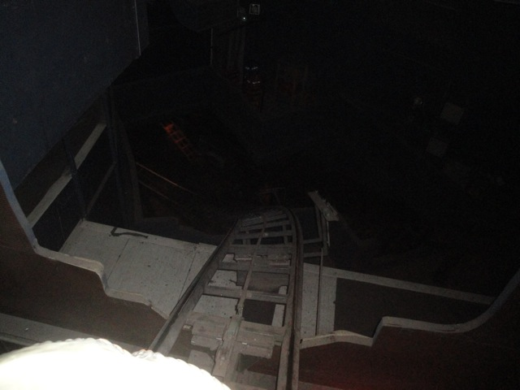

| |
Winjas Review

WARNING!
THIS REVIEW CONTAINS SPOILERS FOR ALL THE COOL TRICKS AND GIMMICKS THAT WINJAS DOES!
DO NOT READ ANY FURTHER IF YOU WANT TO BE SURPRISED WHEN YOU FIRST RIDE!
We're here at Phantasialand, where we'll be reviewing Winjas. Which is not only the park's spinning coaster, but it is also, without a doubt, the best spinning coaster ever. This ride is f*cking insane. I love it. I just truley love this ride. Now you have to keep in mind. This is a duel track coaster with two seperate sides. Now, there's a whole debate about whether you count double tracked coasters as two credits or one. And with one exception, we pretty much always count double tracked coasters as one credit. However, Winjas sort of falls into the category where they're fairly different tracks. So if you count Winjas as two credits, I totally understand that. So yeah. This is gonna be an interesting review. Oh, and I just want to let you know right now. This review will contain spoilers for the ride. Do not read if you want to be surprised when you first ride. All right. So we get in the cars, pull down the lap bar, and away we go. We go ahead into a dark room and just stop. We then head up the elevator lift with a cool soundtrack blaring. We stop. If we chose Fear, we go through a small drop before going through a series of turns above the pathway. If we chose Force, we go through the dark and go through this weird sort of funky drop that really lays on the speed for us. We then rise up out of the darkness before heading down a hill that while it isn't too big, it is a lot of fun as we fall between the buildings, weaving through the theming. We then rise up, meet up with Fear, and together, we go through the part of the ride that everyone knows about. The Wild Mouse portion. This is the part of the ride where we really start to spin as we go through a bunch of tight turns and gain some speed as we helix on down. And keep in mind, this is the tame part of the ride. Just wait until we start to really get into all the special effects and funky sh*t. We then go into the dark and do some more intersting stuff as we spin and rotate through the dark. If we chose Fear, the track in front of us tilts as we tilt foreward. Hey, a nice little touch and it does catch us off guard. We then drop into the darkness and spin around some more, getting dizzy until we eventually hit the brake run. If we chose Force, we tilt sideways as the cars tilt to the side. Whoa!! Funky!! And then, we are released sideways. OK, that is just plain insane. We then go through some more madness in the dark, spinning like crazy, and just having a great time. We then hit the brake run, but wait! The Force side of Winjas has one more trick up its sleeve. Drop Track. Yep. The track drops and rises, like a fun house floor. That's just plain cool. Love that little touch. So while Winjas may not seem like that special of a ride, it is truly a great experience. Not only is this by far, the best spinning coaster ever, but it's just a great ride in general and totally up there. And it's not like spinning coasters are lacking as there are other incredible and amazing spinning coasters out there. But this just takes the win with all of its great effects and gimmicks and just having a really fun layout. Make sure you ride both tracks and check it out when you visit Phantasialand.
9/10
Location: Phantasialand
Opened: 2002
Built by: Maurer Söhne
Last Ridden: June 29, 2012
Winjas Photos



Home
|